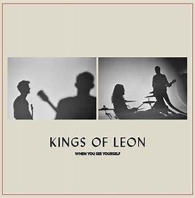
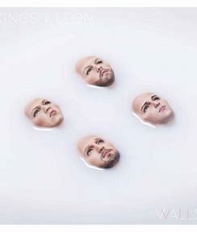

Selecciona un disco y podras disfrutar del álbum ❤️💿
 

Kings of Leon es un grupo musical estadounidense de rock. Fue creado en Nashville, Tennessee, Estados Unidos en 1999. Está integrado por tres hermanos, Caleb, Nathan y Jared Followill y su primo Matthew Followill. La banda consiguió éxito con los sencillos "Sex On Fire" y "Use Somebody", los cuales, catapultaron a la banda a la fama mundial. Su álbum "Only By The Night", le retribuyó a la agrupación un disco de platino en Estados Unidos. A lo largo de sus años de carrera ha compartido con el público nuevos discos de estudio. Son algunos de los temas más populares de la banda: "Sex On Fire", "Use Somebody", "Pyro" y "Closer". El primero de ellos, sumó más de quinientos millones de reproducciones en YouTube.


El nombre de la banda, Kings of Leon, hace honor a su padre y abuelo paterno ya que son fuertemente influenciados por su educación religiosa y raíces del Sur de Estados Unidos en la creación de su música.
Kings of Leon es ampliamente considerada como una de las mejores bandas de rock sureño. Desde su debut en 2003 hasta su más reciente producción discográfica del 2021, han lanzado varios álbumes
Antes de que se convirtieran en una banda que llena estadios en México y todo el mundo, la primera presentación oficial de Kings of Leon en México fue en el mítico Salón 21. En realidad fue un show exclusivo para Radioactivo 98.5 (estación que por cierto, también extrañamos), donde los Followill sorprendieron a los afortunados que tuvieron chance de verlos interpretando rolas como “Molly’s Chambers”, “California Waiting” y las rolas de su álbum debut. ings of Leon dio sus primeros pasos hacia su formación cuando los padres de los hermanos se divorciaron en 1997. Al año siguiente, tras varios trabajos, los hermanos se mudaron a Nashville, Tennessee, Estados Unidos. Luego de juntarse para ensayar, formaron una banda en el año 2000 con su primo Matthew. Su música estaba influenciada por la música cristiana religiosa y sus raíces del sur de Estados Unidos.


En este link
Facebook link
Instagram link